Configuració LDAP GUI
Entorns Gràfics per a LDAP
En aquest document, explicarem com utilitzar diferents entorns gràfics per a LDAP, amb especial atenció a Apache Directory Studio.
Els entorns gràfics faciliten la gestió dels servidors LDAP, permetent la creació, modificació i administració d'usuaris, grups i altres objectes de manera visual. Algunes eines recomanades són:
- Apache Directory Studio - Eina completa amb interfície intuïtiva.
- JXplorer - Navegador i editor LDAP de codi obert.
- phpLDAPadmin - Aplicació web per gestionar LDAP des del navegador.
- LDAP Account Manager - Eina avançada per administrar usuaris i grups amb múltiples funcionalitats.
Apache Directory Studio
En aquest tutorial farem ús d'Apache Directory Studio, una de les eines més populars per gestionar directoris LDAP. Aquesta aplicació permet administrar diversos servidors LDAP i ofereix funcionalitats com:
- Edició d'esquemes.
- Cerca avançada d'entrades.
- Configuració de la seguretat.
És especialment útil per a usuaris que necessiten una gestió flexible i professional dels seus directoris LDAP.
Inici i Configuració
1. Descarregar i preparar l'eina
- Descarrega Apache Directory Studio des de la pàgina oficial:
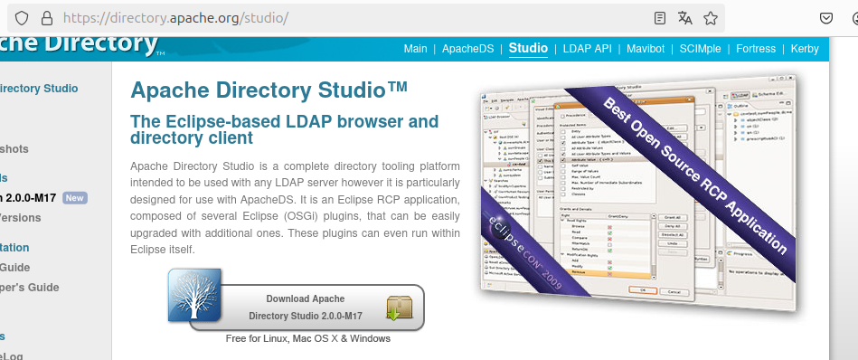
- Descomprimeix el fitxer descarregat i obre el directori resultant:
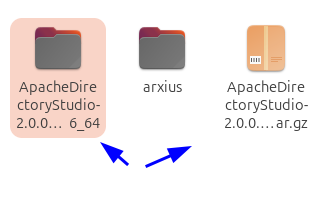
- Executa l'arxiu executable per iniciar l'eina:
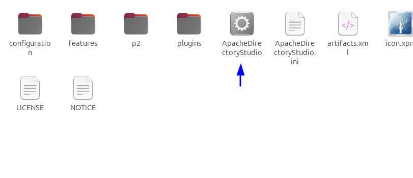
Important: Per evitar errors en iniciar Apache Directory Studio, assegura't de tenir instal·lat el Java Development Kit (JDK). Si no tens Java instal·lat, executa la comanda:
sudo apt install default-jdkAquesta comanda instal·la la versió per defecte del JDK en distribucions basades en Debian i Ubuntu, indispensable per a l'execució correcta de l'eina.
2. Crear una nova connexió LDAP
- Fes clic a LDAP i selecciona New Connection:
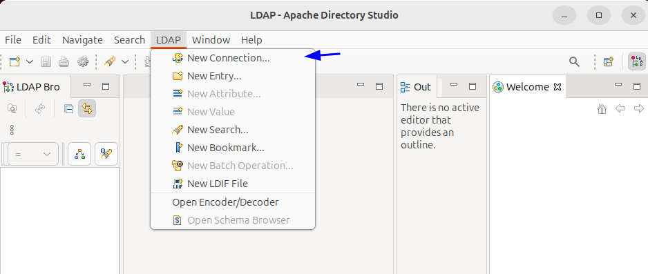
- Introdueix les dades de connexió:
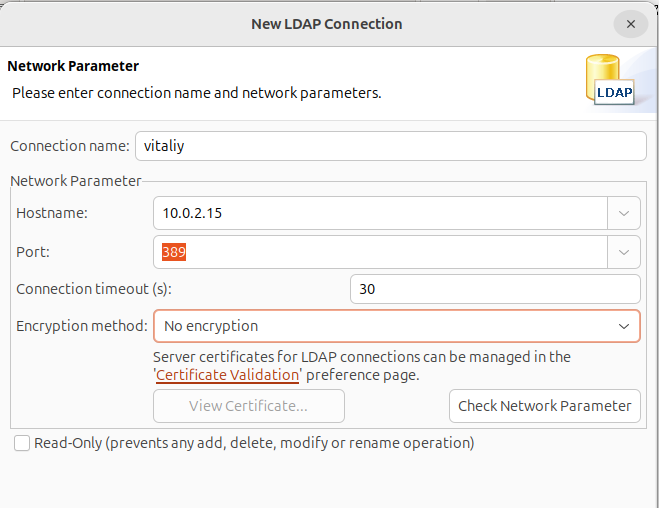
- Afegeix els detalls del cd, dc i la contrasenya de l'administrador:
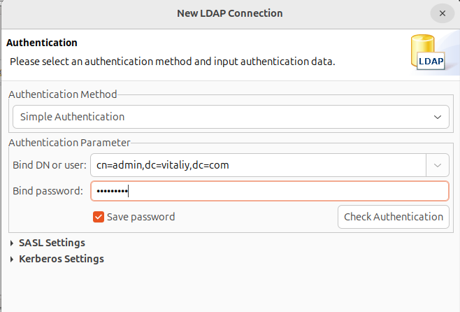
- Un cop establerta la connexió, podràs visualitzar l'estructura LDAP amb la OU (Organizational Unit), el CN (Common Name) i els UID:
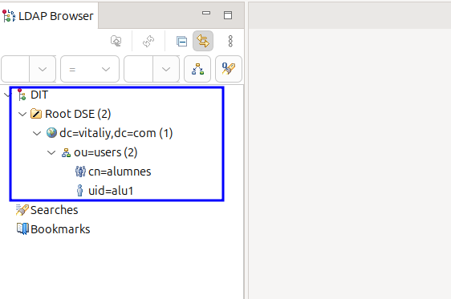
Afegir Registres Manualment
Per afegir un nou registre manualment, segueix aquests passos:
1. Crear una nova entrada
- Fes clic dret sobre la OU on vols afegir el registre i selecciona New Entry:
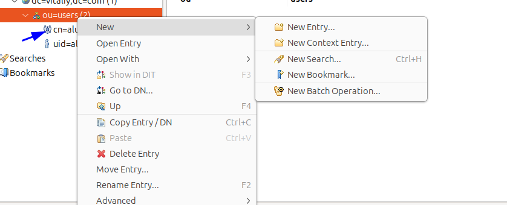
- Escull l'opció per crear una entrada des de zero:
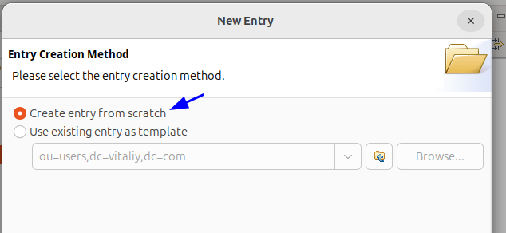
2. Configurar el registre
- Defineix l'objectClass:
En aquest exemple, crearem un grup seleccionant posixGroup:
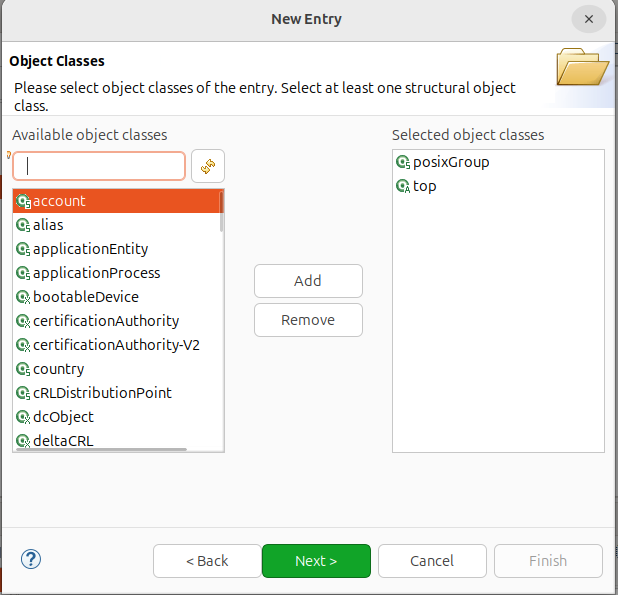
- Estableix el RDN:
Introdueix el RDN necessari. En aquest cas, utilitzarem el cn amb el nom "Public" (pots usar el nom que prefereixis):
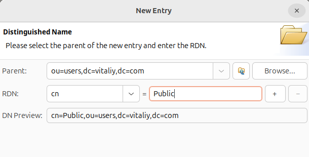
- Assigna un gidNumber:
Com que es tracta d'un grup, se't demanarà que introdueixis un gidNumber. Per exemple, pots posar el valor 5000:
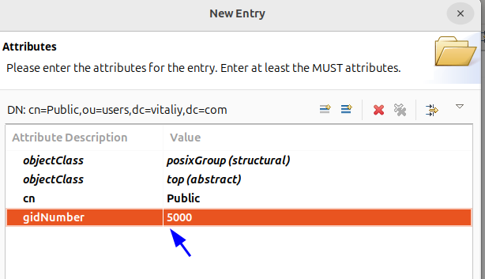
3. Verificar la creació
Un cop completats aquests passos, el registre s'ha creat correctament. Verifica-ho navegant per l'estructura del directori:
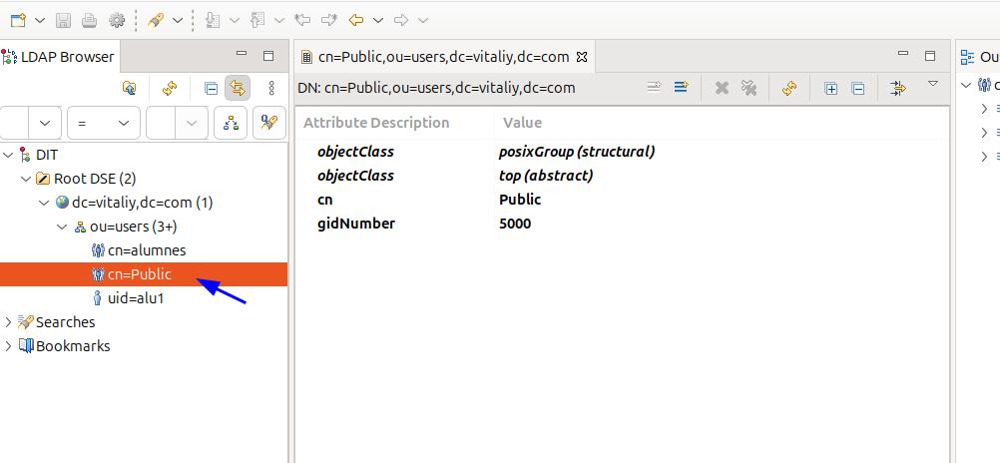
Creació amb Plantilles
En aquesta secció, afegirem un registre utilitzant una plantilla existent, seleccionant la plantilla d’un usuari que ja tenim creat.
- Seleccionar la plantilla d'usuari:
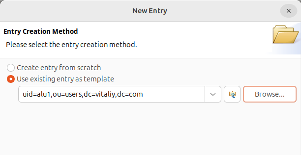
- En aquest cas, no cal modificar res, ja que volem crear un usuari i la configuració per defecte ens serveix:
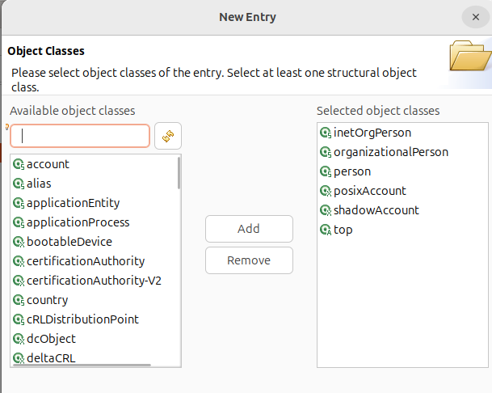
- Modificar el
cn:
Canvia elcndel registre per assignar-li un nou nom.
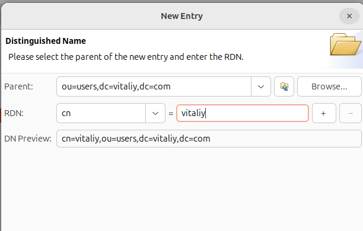
- En fer clic a Next, se't demanarà que introdueixis un
UIDposarem el nostre nom:
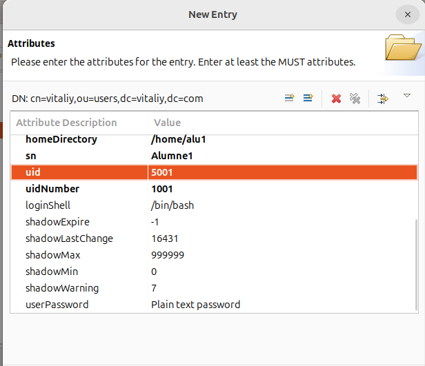
Important: No oblidis canviar també la ruta
/home/per al nou usuari, el uidNumber, gidNumber i el uid que és el nom de l'usuari de sessió.
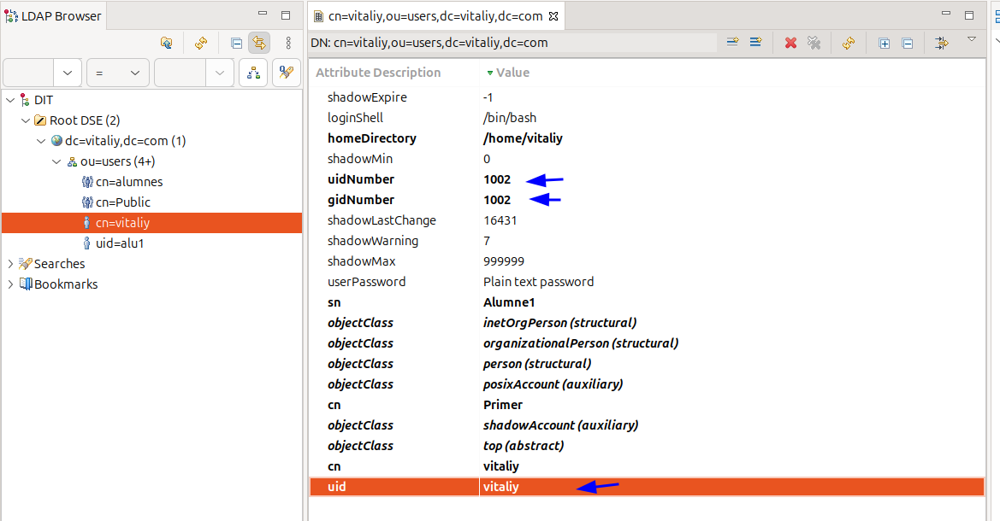
Comprovació
Amb un client integrat al domini LDAP, inicia sessió. En fer-ho, es crea automàticament el directori /home/vitaliy. Per verificar-ho, executa la comanda whoami per confirmar el nom d'usuari i id per visualitzar la informació d'identificació.
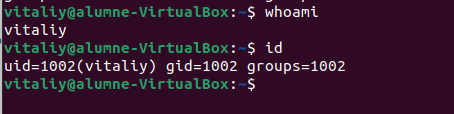
Solució de Problemes
Aquí tens algunes solucions als problemes més comuns:
- Error de Java o JDK:
Si al iniciar Apache Directory Studio apareixen errors relacionats amb Java, assegura't d'haver instal·lat correctament el JDK amb:
sudo apt install default-jdk
- Connexió fallida al servidor LDAP:
- Verifica que la informació de connexió (cd, dc i credencials) sigui correcta.
-
Assegura't que el servidor LDAP estigui en funcionament i accessible des de la teva xarxa.
-
Problemes en la creació de registres:
- Comprova que els atributs obligatoris (com
objectClass,cn,gidNumberoUID) s'hagin introduït correctament. - Revisa la configuració de les plantilles per assegurar-te que no hi hagi errors de format o informació duplicada.
Referències i Recursos
- Documentació d'Apache Directory Studio
- Introducció a LDAP
- JXplorer
- phpLDAPadmin
- LDAP Account Manager